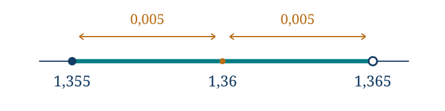
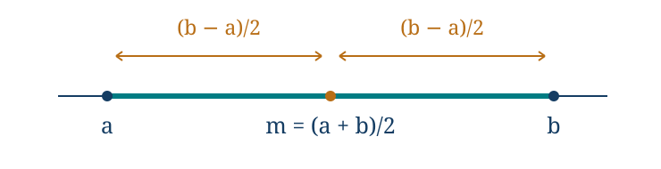

Estimación, aproximación y control del error
← Potencias, raíces y notación científica · Índice del libro · Siguiente →
Una mesa mide \(1{,}20\) metros de largo y \(0{,}80\) de ancho. Multiplicar las dos lecturas da \(0{,}96\) metros cuadrados. Si la regla solo distingue centímetros, las medidas podrían haber sido algo mayores o menores: la cuenta es exacta para los números escritos, pero el área de la mesa no queda determinada con esa misma exactitud. Una calculadora que mostrara doce decimales no habría medido mejor la mesa.
También aparece la aproximación cuando los datos son exactos. El lado de un cuadrado de área dos es \(\sqrt2\); al sustituirlo por \(1{,}41\) introducimos una diferencia que no estaba en el problema geométrico. Podemos necesitar un decimal para cortar una pieza, comparar precios o decidir si algo cabe. La pregunta matemática consiste entonces en saber cuánto puede cambiar la respuesta y si ese cambio afecta a la decisión.
Hay situaciones en que basta una estimación de tamaño: cuánta agua consume una casa durante un año, cuántas hojas requiere una tirada. Otras exigen una garantía: si un cable alcanzará, si dos medidas permiten afirmar cuál es mayor. En este capítulo conservaremos esa diferencia. Una estimación depende de supuestos que debemos poder revisar; una cota afirma que el valor buscado permanece dentro de unos límites justificados.
Lo exacto y lo que decidimos conservar
El número \(3/8\) tiene una escritura decimal finita, \(0{,}375\), y ambas expresiones son exactamente iguales. El número \(\sqrt2\) también está dado exactamente, aunque no podamos escribir todas sus cifras decimales. Una representación exacta identifica el número mediante una expresión igual a él.
Escribimos \(\sqrt2\approx1{,}41\) para señalar una aproximación. El símbolo por sí solo no especifica cuánto difieren ambos números. Si añadimos \(1{,}41<\sqrt2<1{,}42\), sabemos que la diferencia respecto de \(1{,}41\) es positiva y menor que \(0{,}01\). Esa información puede ser más útil que muchas cifras sin una garantía.
Problema 1. Un decimal puede ser exacto
Enunciado. Clasifica \(1/8=0{,}125\) y \(\sqrt2\approx1{,}4\). Si usamos \(1{,}4\) como lado de un cuadrado que debía tener área dos, ¿qué área obtenemos y cuánto falta?
Solución. La primera igualdad es exacta: multiplicar \(0{,}125\) por ocho da uno. La segunda reemplaza la raíz por un número distinto, pues \(1{,}4^2=1{,}96\ne2\). El cuadrado construido con ese lado tiene área \(1{,}96\) y le faltan \(2-1{,}96=0{,}04\) unidades cuadradas respecto del área prevista. La diferencia en el área no es igual a la diferencia en el lado. El procedimiento de elevar al cuadrado transforma también la aproximación y exige su propio control.
Para truncar un decimal a una posición elegida conservamos las cifras hasta esa posición y suprimimos las posteriores. En números negativos esto se hace sobre el valor absoluto y después se restituye el signo; truncar acerca el número al cero. Si la posición elegida representa unidades de tamaño \(u\), la distancia entre el número y su truncación es menor que \(u\). Por ejemplo, a centésimas usamos \(u=0{,}01\).
Redondear consiste en elegir un múltiplo de \(u\) cuya distancia al número sea mínima. Si un número cae exactamente a mitad de camino, hay dos candidatos igual de cercanos. En este libro elegiremos en ese empate el que se aleja del cero. Así, a centésimas, \(2{,}345\) se redondea a \(2{,}35\) y \(-2{,}345\) a \(-2{,}35\). Otras convenciones resuelven el empate de otro modo; lo decisivo es declarar cuál se usa y mantenerla.
Problema 2. Truncar un número negativo
Enunciado. Trunca y redondea \(-2{,}71828\) a centésimas. Calcula la distancia exacta entre el número original y cada resultado.
Solución. La truncación conserva el signo y las dos primeras cifras decimales: obtenemos \(-2{,}71\). Su distancia al original es \(|-2{,}71828-(-2{,}71)|=0{,}00828\). Los múltiplos vecinos de una centésima son \(-2{,}72\) y \(-2{,}71\); el primero está a distancia \(0{,}00172\) y es el más cercano. El redondeo es por tanto \(-2{,}72\). En ambos casos la distancia es positiva; lo que cambia de signo es la diferencia orientada. La truncación queda por encima del número negativo, mientras que el redondeo elegido queda por debajo.
La garantía del redondeo se deduce de la separación entre múltiplos consecutivos de \(u\). Un número situado entre dos de ellos está, como máximo, a mitad de esa separación del más cercano. Si \(r\) es el resultado de redondear \(x\),
\[|x-r|\le\frac u2.\]
La igualdad puede ocurrir en un empate. Esta cota describe la operación de redondear un número conocido. Para aplicarla a una lectura de instrumento debemos suponer además que el instrumento redondea correctamente y que no intervienen otros errores de calibración, resolución o uso. Una pantalla con dos decimales no proporciona por sí sola esa garantía física.
Problema 3. La frontera entre dos redondeos
Enunciado. Un número positivo, al redondearse a centésimas, da \(1{,}36\). Describe todos los valores posibles del número antes de redondear y explica los extremos.
Solución. Los puntos medios con los vecinos \(1{,}35\) y \(1{,}37\) son \(1{,}355\) y \(1{,}365\). Desde \(1{,}355\) inclusive se elige \(1{,}36\): en el empate inferior, ese es el candidato más alejado del cero. En \(1{,}365\) se elige ya \(1{,}37\). Los valores posibles forman \([1{,}355,1{,}365)\). Todos distan de \(1{,}36\) a lo sumo \(0{,}005\), pero la cota simétrica cerrada incluye también el extremo superior que nuestra regla de desempate excluye. Para una garantía de error puede servir esa cota algo más amplia; para describir exactamente la preimagen del redondeo hay que cuidar los extremos.

Problema 4. Redondear dos veces puede cambiar la respuesta
Enunciado. Redondea \(9{,}949\) directamente a décimas. Compara con redondear primero a centésimas y luego a décimas.
Solución. Para la decisión directa, el punto medio entre \(9{,}9\) y \(10{,}0\) es \(9{,}95\). Como \(9{,}949<9{,}95\), el resultado es \(9{,}9\). Si primero redondeamos a centésimas obtenemos \(9{,}95\). Ese valor cae exactamente en el empate de las décimas y se redondea a \(10{,}0\). La primera operación ha desplazado el número hasta una frontera que antes no alcanzaba. Por eso conviene conservar las cifras de trabajo y efectuar el redondeo solicitado al final, usando el valor original o una aproximación suficientemente controlada.
Qué dicen las cifras significativas
En \(0{,}004760\), los ceros iniciales sitúan la escala y las cuatro cifras \(4\), \(7\), \(6\), \(0\) expresan la precisión de la escritura. El cero final ocupa una posición que hemos decidido mostrar. En cambio, una escritura como \(4500\) puede resultar ambigua en un informe de medidas: quizá se contaron exactamente cuatro mil quinientos objetos, quizá se redondeó a centenas, quizá a decenas. La notación científica permite aclarar la intención: \(4{,}5\cdot10^3\) muestra dos cifras significativas y \(4{,}50\cdot10^3\) muestra tres.
Para redondear a \(s\) cifras significativas un número no nulo, localizamos la primera cifra no nula y contamos desde ella. Si \(10^k\le |x|<10^{k+1}\), la posición de la cifra \(s\) corresponde al tamaño \(u=10^{k-s+1}\). Redondeamos a esa posición. Puede producirse un acarreo que cambie la potencia normalizada; la cantidad de cifras que deseamos comunicar debe quedar clara en la escritura final.
Las cifras significativas comunican las posiciones que se conservan en la escritura de un número. Para vincularlas con una cota de error se necesita especificar cómo se obtuvo esa escritura. Las reglas prácticas que conservan cierta cantidad de cifras en productos o sumas ayudan a evitar resultados extravagantes, pero una cota explícita resulta preferible cuando la decisión necesita una garantía. Los números contados exactamente y los factores de conversión definidos exactamente tampoco adquieren incertidumbre por tener pocas cifras escritas.
Problema 5. Tres escrituras y una información ausente
Enunciado. Indica las cifras significativas que muestran \(0{,}004760\), \(4{,}50\cdot10^3\) y \(4500\). Redondea el primer número a tres cifras significativas. ¿Permite alguna de estas escrituras conocer por sí sola el error de un instrumento?
Solución. La primera escritura muestra cuatro cifras significativas, incluida la última posición cero; a tres cifras queda \(0{,}00476=4{,}76\cdot10^{-3}\). El valor numérico no cambia en este caso, pero dejamos de mostrar una posición. \(4{,}50\cdot10^3\) muestra tres cifras significativas. La escritura \(4500\) aislada no aclara la intención de sus ceros ni si procede de una cuenta exacta. Ninguna de ellas especifica por sí sola los errores de un instrumento. Si sabemos adicionalmente que \(4500\) es el redondeo correcto a centenas de una cantidad positiva, podremos usar la cota cincuenta; esa información procede del procedimiento declarado.
Garantías de truncación y redondeo
Estas cotas describen operaciones sobre un número. Para atribuirlas a una medición hacen falta hipótesis adicionales sobre el instrumento y su uso.
| Propiedad | Fórmula y condiciones de uso |
|---|---|
| Truncación hacia cero | \(\lvert x-t\rvert<u\), donde \(t\) es la truncación a una posición de tamaño \(u>0\). |
| Redondeo al más cercano | \(\lvert x-r\rvert\le u/2\), con \(u>0\). En los empates se elige aquí el múltiplo que se aleja del cero. |
| Cifras significativas | Para \(x\ne0\), si \(10^k\le\lvert x\rvert<10^{k+1}\) y se conservan \(s\ge1\) cifras, se redondea en la posición \(u=10^{k-s+1}\). |
Pruebas. Apéndice: «Truncación, redondeo y cifras significativas».
Construir un intervalo que responda la pregunta
Una cota debe poder justificarse sin conocer previamente la respuesta con muchos decimales. Para acotar una raíz positiva basta buscar números cuyos cuadrados queden a ambos lados del radicando. La monotonía del cuadrado en los no negativos convierte esas comparaciones en cotas de la raíz. Podemos estrechar el intervalo cuanto haga falta, sin sustituir una desigualdad por una igualdad decimal.
Problema 6. Saber de qué lado del punto medio está una raíz
Enunciado. Acota \(\sqrt7\) entre dos centésimas consecutivas y determina su redondeo a centésimas con una justificación exacta.
Solución. Calculamos \(2{,}64^2=6{,}9696<7\) y \(2{,}65^2=7{,}0225>7\). Resulta \(2{,}64<\sqrt7<2{,}65\). Ese intervalo por sí solo no decide cuál de las dos centésimas es más cercana. Examinamos el punto medio: \(2{,}645^2=6{,}996025<7\), así que \(\sqrt7>2{,}645\). La raíz está en la mitad superior del intervalo y se redondea a \(2{,}65\). El razonamiento usa únicamente cuadrados de decimales finitos, que son racionales exactos.
Problema 7. Una lectura truncada informa algo distinto
Enunciado. Una pantalla muestra \(-1{,}36\). Describe los valores originales posibles si sabemos que trunca a centésimas y compáralos con los posibles si redondea a centésimas según nuestra convención.
Solución. Truncar hacia el cero produce \(-1{,}36\) para \(-1{,}37<x\le-1{,}36\): el extremo \(-1{,}37\) ya conservaría sus propias centésimas. El intervalo es \((-1{,}37,-1{,}36]\). Si redondea, las fronteras son \(-1{,}365\) y \(-1{,}355\). En la inferior el empate se aleja del cero hasta \(-1{,}37\), por lo que se excluye; en la superior se aleja hasta \(-1{,}36\), por lo que se incluye. El intervalo es \((-1{,}365,-1{,}355]\). La misma lectura visible puede corresponder a conjuntos distintos cuando cambia el procedimiento.
Medir el tamaño de la diferencia
Si \(x\) es el valor exacto y \(a\) la aproximación, el error absoluto es \(|a-x|\). Tiene las mismas unidades que la cantidad aproximada. Cuando \(x\ne0\), el error relativo es \(|a-x|/|x|\); al dividir cantidades de la misma unidad obtenemos un número sin unidad. Multiplicar por cien lo expresa como porcentaje. El denominador es el tamaño del valor exacto, no el de la aproximación, salvo que se anuncie expresamente otra comparación.
Problema 8. El menor error absoluto puede pesar más
Enunciado. Se aproxima una longitud exacta de \(1000\) metros por \(998\) metros y otra de cuatro metros por \(3{,}8\) metros. Compara sus errores absolutos y relativos. ¿Qué ocurre con el error relativo si el valor exacto es cero?
Solución. En la primera longitud el error absoluto es dos metros y el relativo es \(2/1000=0{,}002=0{,}2\%\). En la segunda, el error absoluto es \(0{,}2\) metros y el relativo \(0{,}2/4=0{,}05=5\%\). Aunque el segundo error absoluto es diez veces menor, representa una fracción mayor de lo que se mide. Si el valor exacto es cero, la fórmula relativa exige dividir por cero y no está definida, incluso cuando la aproximación también sea cero. El error absoluto sigue teniendo sentido.
Frecuentemente ignoramos \(x\), pero sabemos que \(|x-a|\le\delta\). Esta escritura equivale a \(a-\delta\le x\le a+\delta\), con \(\delta\ge0\). El símbolo \(a\pm\delta\) abrevia aquí ese intervalo de valores admisibles. No introduce una distribución de probabilidades ni un nivel de confianza. Puede representar una tolerancia garantizada o una cota derivada de otras cuentas, según los supuestos del problema.
Si además \(|a|>\delta\), la desigualdad triangular da \(|x|\ge |a|-\delta>0\). Por tanto tenemos la garantía
\[\frac{|x-a|}{|x|}\le\frac{\delta}{|a|-\delta}.\]
Usar \(\delta/|a|\) puede ser una aproximación conveniente cuando \(\delta\) es pequeña respecto de \(|a|\), pero no ofrece automáticamente la misma cota superior. Cerca del cero, la diferencia entre ambos denominadores se vuelve decisiva.
Problema 9. Acotar un error relativo sin conocer el valor exacto
Enunciado. Se sabe que \(|x-50|\le0{,}5\). ¿Garantiza la aproximación cincuenta un error relativo de a lo sumo \(1\%\)? Obtén una cota segura.
Solución. El valor exacto pertenece a \([49{,}5,50{,}5]\). Su tamaño puede ser menor que cincuenta; por eso \(0{,}5/50=1\%\) no basta como garantía. Usando el menor denominador admisible obtenemos \(|x-50|/|x|\le0{,}5/49{,}5=1/99\), aproximadamente \(1{,}0101\%\). El extremo \(x=49{,}5\) alcanza esa razón y demuestra que la garantía del uno por ciento sería falsa. La fracción \(1/99\) es la cota exacta; el porcentaje decimal escrito después es una aproximación descriptiva.
Errores y sus denominadores
El número \(x\) es el valor exacto y \(a\) su aproximación. Una cota de error no presupone una distribución de probabilidades.
| Propiedad | Fórmula y condiciones de uso |
|---|---|
| Error absoluto | \(E_{\mathrm{abs}}=\lvert a-x\rvert\). Conserva las unidades de la cantidad. |
| Error relativo | \(E_{\mathrm{rel}}=\lvert a-x\rvert/\lvert x\rvert\), con \(x\ne0\). Como porcentaje es \(100E_{\mathrm{rel}}\). |
| Cota como intervalo | \(\lvert x-a\rvert\le\delta\Longleftrightarrow a-\delta\le x\le a+\delta\), con \(\delta\ge0\). |
| Cota relativa segura | Si \(\lvert x-a\rvert\le\delta<\lvert a\rvert\), entonces \(E_{\mathrm{rel}}\le\delta/(\lvert a\rvert-\delta)\). El denominador es una cota inferior positiva para \(\lvert x\rvert\). |
Pruebas. Apéndice: «Errores y cotas relativas seguras».
Llevar las cotas a través de las operaciones
Supongamos que \(x\in[a,b]\) e \(y\in[c,d]\). Sumar conserva el orden, de modo que \(x+y\in[a+c,b+d]\). Para restar, el valor más pequeño de \(x-y\) se obtiene combinando el menor \(x\) con el mayor \(y\); por tanto \(x-y\in[a-d,b-c]\). También podemos justificarlo escribiendo \(-y\in[-d,-c]\) y sumando intervalos.
Si expresamos las cotas alrededor de valores centrales, \(|x-a|\le\alpha\) e \(|y-b|\le\beta\), la desigualdad triangular muestra que tanto el error de \(a+b\) como el de \(a-b\) está acotado por \(\alpha+\beta\). En efecto, \((x+y)-(a+b)=(x-a)+(y-b)\); el valor absoluto de una suma no supera la suma de los valores absolutos. Para la resta aparece un signo distinto, pero la misma desigualdad. No necesitamos suponer independencia estadística para estas cotas deterministas.
Problema 10. Una suma y una diferencia
Enunciado. Dos longitudes satisfacen \(x=20\pm0{,}2\) metros e \(y=19\pm0{,}2\) metros. Obtén intervalos seguros para la suma y la diferencia.
Solución. Las longitudes pertenecen a \([19{,}8,20{,}2]\) y \([18{,}8,19{,}2]\). La suma está entre \(38{,}6\) y \(39{,}4\) metros, lo que podemos escribir \(39\pm0{,}4\). La diferencia está entre \(19{,}8-19{,}2=0{,}6\) y \(20{,}2-18{,}8=1{,}4\) metros: es \(1\pm0{,}4\). La misma cota absoluta pesa mucho más en la diferencia pequeña. Ambos intervalos son alcanzables si no se impone ninguna relación adicional entre las longitudes.
Para multiplicar intervalos positivos basta multiplicar los extremos inferiores entre sí y los superiores entre sí. Si hay signos distintos, esa receta puede fallar. En general, el producto queda entre el menor y el mayor de \(ac\), \(ad\), \(bc\), \(bd\). Para justificarlo, fijamos primero \(y\): la expresión \(xy\) es lineal en \(x\) y alcanza sus extremos en \(a\) o \(b\). Al variar después \(y\), cada uno de los productos \(ay\) y \(by\) alcanza sus extremos en \(c\) o \(d\). Así bastan las cuatro combinaciones, cualesquiera que sean los signos.
Problema 11. Los signos cambian qué extremos hay que combinar
Enunciado. Si \(x\in[-2,3]\) e \(y\in[4,5]\), encuentra el menor intervalo que contiene todos los productos \(xy\) permitidos sin otras restricciones.
Solución. Las cuatro combinaciones de extremos son \(-2\cdot4=-8\), \(-2\cdot5=-10\), \(3\cdot4=12\) y \(3\cdot5=15\). El mínimo es \(-10\) y el máximo quince, de modo que \(xy\in[-10,15]\). Ambos extremos se alcanzan y ningún intervalo menor puede contener todos los productos. Multiplicar simplemente los dos extremos inferiores habría dado \(-8\), perdiendo productos válidos como \((-2)5=-10\).
Una forma útil de seguir el error del producto consiste en escribir \(x=a+e\), \(y=b+f\), con \(|e|\le\alpha\), \(|f|\le\beta\). Al desarrollar,
\[xy-ab=af+be+ef.\]
La desigualdad triangular proporciona entonces
\[|xy-ab|\le |a|\beta+|b|\alpha+\alpha\beta.\]
El último término recoge el producto de las dos perturbaciones. Aunque a veces sea pequeño, descartarlo sin justificación convierte una garantía en una regla aproximada. Si \(ab\ne0\), dividir por \(|ab|\) da una cota relativa respecto del producto central: \(\alpha/|a|+\beta/|b|+\alpha\beta/|ab|\). Ese denominador central debe distinguirse del valor exacto \(|xy|\) que define el error relativo de la respuesta.
Problema 12. El área que los datos permiten
Enunciado. Los lados de una pieza rectangular están en \(4{,}8\pm0{,}05\) centímetros y \(3{,}2\pm0{,}05\) centímetros. Calcula el intervalo de áreas y una cota simétrica alrededor del producto central.
Solución. Los lados son positivos y están en \([4{,}75,4{,}85]\) y \([3{,}15,3{,}25]\). El área pertenece a \([4{,}75\cdot3{,}15,4{,}85\cdot3{,}25]=[14{,}9625,15{,}7625]\) centímetros cuadrados. El producto central es \(4{,}8\cdot3{,}2=15{,}36\). La distancia al extremo inferior es \(0{,}3975\) y al superior es \(0{,}4025\), así que una cota simétrica segura es \(15{,}36\pm0{,}4025\) centímetros cuadrados. La fórmula general da la misma cota: \(4{,}8(0{,}05)+3{,}2(0{,}05)+0{,}05^2=0{,}4025\). Los decimales de los extremos son resultados exactos de las cotas estipuladas; no representan nuevas mediciones de la pieza.
Dividir exige alejarse del cero
Para \(0<c\le y\le d\), invertir cambia el orden: \(1/d\le1/y\le1/c\). Con un numerador positivo \(a\le x\le b\), obtenemos \(a/d\le x/y\le b/c\). La menor razón combina el menor numerador con el mayor denominador, y la mayor combina los otros extremos. Si intervienen signos distintos, podemos construir primero el intervalo recíproco del denominador, siempre que no contenga cero, y usar la regla general del producto.
Problema 13. Una rapidez y un redondeo hacia afuera
Enunciado. Una distancia está entre \(99\) y \(101\) metros y un tiempo entre \(19{,}8\) y \(20{,}2\) segundos. Calcula un intervalo exacto para la rapidez media y otro seguro cuyos extremos tengan dos decimales.
Solución. Distancia y tiempo son positivos. La rapidez está entre \(99/20{,}2=495/101\) y \(101/19{,}8=505/99\) metros por segundo. Son aproximadamente \(4{,}90099\) y \(5{,}10101\). Para conservar una garantía con dos decimales debemos bajar el extremo inferior y subir el superior: \([4{,}90,5{,}11]\) metros por segundo sirve. Redondear ambos al más cercano habría dado \([4{,}90,5{,}10]\), que pierde valores admitidos por el extremo superior exacto. El intervalo también queda contenido en \(5{,}00\pm0{,}11\) metros por segundo. Toda esta información depende de que las cotas iniciales sean válidas.
Problema 14. Cuando no existe una cota finita
Enunciado. Se sabe únicamente que \(x\in[-0{,}1,0{,}1]\). ¿Podemos asegurar que \(1/x\) está dentro de algún intervalo finito? Examina también el caso en que se añade \(x\ne0\).
Solución. El intervalo incluye cero, donde el recíproco no está definido. Añadir \(x\ne0\) evita esa falta de definición, pero permite valores no nulos tan próximos al cero como queramos. Para cualquier entero \(N\ge10\), el valor \(x=1/N\) está permitido y su recíproco es \(N\), que no tiene cota superior finita al variar \(N\). Con \(x=-1/N\) se obtienen recíprocos negativos sin cota inferior finita. Por tanto tampoco la condición adicional produce un intervalo finito seguro. La dificultad procede de la información disponible sobre el denominador; escribir más decimales en una aproximación central no la resuelve.
Llevar intervalos y errores a través de las cuentas
En las tres primeras filas se supone \(x\in[a,b]\), \(y\in[c,d]\), con \(a\le b\) y \(c\le d\). Son envolventes seguras; una dependencia entre las cantidades puede permitir cotas más estrechas.
| Propiedad | Fórmula y condiciones de uso |
|---|---|
| Suma de intervalos | \(a+c\le x+y\le b+d\). |
| Resta de intervalos | \(a-d\le x-y\le b-c\). |
| Producto de intervalos | El menor y el mayor de \(ac,ad,bc,bd\) acotan \(xy\). Se examinan las cuatro esquinas, cualquiera que sea el signo. |
| Recíproco separado de cero | Si \(0<c\le y\le d\), entonces \(1/d\le1/y\le1/c\). Para un intervalo negativo que no contenga cero se invierten también los extremos; no se usa esta regla si el intervalo contiene cero. |
| Cociente positivo | Si \(0<a\le x\le b\) y \(0<c\le y\le d\), entonces \(a/d\le x/y\le b/c\). Para otros signos se usa el producto con el intervalo recíproco, si existe. |
| Error de suma o resta | Si \(\lvert x-a\rvert\le\alpha\) y \(\lvert y-b\rvert\le\beta\), entonces el error absoluto de aproximar \(x\pm y\) por \(a\pm b\) no supera \(\alpha+\beta\), con \(\alpha,\beta\ge0\). |
| Error del producto | Bajo las mismas cotas, \(\lvert xy-ab\rvert\le\lvert a\rvert\beta+\lvert b\rvert\alpha+\alpha\beta\). El término de segundo orden se conserva. |
| Relativo al producto central | Si además \(ab\ne0\), la cota para \(\lvert xy-ab\rvert/\lvert ab\rvert\) es \(\alpha/\lvert a\rvert+\beta/\lvert b\rvert+\alpha\beta/\lvert ab\rvert\). Su denominador es el producto central, no el producto exacto. |
Pruebas. Apéndice: «Intervalos bajo las operaciones», «Propagación determinista de errores».
Reconocer cuándo se repite la misma cantidad
Cuando una cantidad aparece dos veces en una expresión, sus dos apariciones conservan el mismo valor. Por ejemplo, si \(x\in[1,2]\), la diferencia \(x-x\) vale cero para cualquier elección de \(x\); aplicar la regla general de resta a dos intervalos \([1,2]\) produce en cambio \([-1,1]\), porque esa regla admite que se elija un valor distinto en cada intervalo. La envolvente sigue conteniendo todos los resultados posibles, pero aprovechar la relación entre las apariciones permite estrecharla. Al trasladar las cotas a una cuenta tendremos que reconocer qué cantidades pueden variar por separado y cuáles están ligadas.
Problema 15. Dos apariciones, un solo valor
Enunciado. Si \(x\in[-1,1]\), determina los valores posibles de \(x-x\) y de \(x^2\). Compara con restar o multiplicar dos intervalos \([-1,1]\) sin registrar que se trata del mismo \(x\).
Solución. Para cualquier \(x\), la diferencia \(x-x\) es exactamente cero; su conjunto de valores es \(\{0\}\). Restar dos valores elegidos separadamente en \([-1,1]\) daría el intervalo \([-2,2]\), que contiene cero pero incluye diferencias ajenas a nuestra expresión. Para el cuadrado, \(0\le x^2\le1\) y todos los valores de \([0,1]\) se obtienen tomando \(x=\sqrt t\). Multiplicar dos intervalos libremente daría \([-1,1]\) e incluiría productos negativos. La identidad de las dos apariciones permite mejorar ambas cotas sin adquirir datos nuevos.
No hay que confundir esta dependencia algebraica con una correlación estadística. Hemos usado que las dos letras designan exactamente el mismo número en la misma expresión. Tampoco una eventual independencia estadística permitiría sustituir sin más una cota máxima de error por una combinación menor: las afirmaciones probabilísticas requieren su propio modelo. Hasta aquí hemos trabajado con conjuntos de valores admisibles.
Estimar lo que todavía no se ha medido
Para estimar un consumo anual de agua podemos comenzar con una cantidad por persona y día, multiplicarla por el número de personas y después por los días considerados. Cada factor corresponde a un supuesto que podremos revisar: una variación del consumo diario o de la cantidad de personas cambia el producto de una manera visible. Los números cómodos permiten explorar primero el tamaño del resultado; si disponemos de intervalos para esos factores, sus productos proporcionan una envolvente que conserva la incertidumbre de partida. Así podremos explicar de dónde procede la estimación y qué dato convendría precisar para mejorarla.
Problema 16. El agua de un año
Enunciado. Para planificar una reserva de agua de bebida en un hogar hipotético de cuatro personas, se supone un consumo medio diario de dos litros por persona durante \(365\) días. Obtén una estimación anual. ¿Qué intervalo correspondería si el consumo medio por persona estuviera entre \(1{,}5\) y \(2{,}5\) litros diarios?
Solución. El modelo central da \(4\cdot2\cdot365=2920\) litros, del orden de tres mil litros. Las unidades lo comprueban: personas por litros por persona y día por días deja litros. Con los supuestos extremos obtenemos \(4\cdot1{,}5\cdot365=2190\) y \(4\cdot2{,}5\cdot365=3650\) litros. El intervalo \([2190,3650]\) es consecuencia del modelo, no una medición ni una recomendación de consumo. Un año de duración distinta, cambios de ocupantes o una definición diferente del consumo requieren modificar los factores correspondientes. La precisión del producto central no elimina esa dependencia de los supuestos.
Problema 17. ¿Alcanza el tiempo disponible?
Enunciado. En un modelo de viaje sin detenciones, la distancia está en \([118,122]\) kilómetros y la rapidez media efectiva en \([58,62]\) kilómetros por hora. ¿Garantizan estos datos llegar en dos horas? ¿Y en dos horas y diez minutos?
Solución. El tiempo es distancia dividida por rapidez. Sus extremos son \(118/62=59/31\) y \(122/58=61/29\) horas. El máximo \(61/29\) supera dos porque \(61>58\), así que dos horas no ofrecen garantía. Dos horas y diez minutos son \(2+10/60=13/6\) horas. Comparamos exactamente: \(61/29<13/6\) porque \(366<377\). Ese plazo sí basta dentro del modelo. La garantía no incorpora detenciones ni cambios que invaliden la cota de rapidez; se refiere al problema definido por los datos.
Problema 18. Redondear una compra puede dejarla corta
Enunciado. Debemos cubrir una longitud \(L\in[11{,}99,12{,}03]\) metros con piezas de medio metro. Se permite cortar la última y suponemos que no hay pérdidas de corte ni de unión. ¿Cuántas piezas garantizan cubrir la longitud? ¿Es seguro redondear primero \(L\) a doce metros y comprar veinticuatro?
Solución. Veinticuatro piezas cubren exactamente \(24\cdot0{,}5=12\) metros y no bastan cuando \(L=12{,}03\). Para cubrir el mayor valor admisible necesitamos un entero \(n\) tal que \(0{,}5n\ge12{,}03\), es decir, \(n\ge24{,}06\). El menor entero que cumple esto es veinticinco, cuya longitud total es \(12{,}5\) metros. Si la longitud verdadera fuera menor o igual a doce, veinticuatro alcanzarían; los datos permiten también longitudes mayores. La dirección del redondeo depende aquí de garantizar una cobertura, no de escoger el número más cercano.
Un problema sensible y un cálculo que pierde información
Una pregunta es sensible a las variaciones de los datos cuando cambios pequeños en ellos pueden provocar cambios importantes en la respuesta. Eso puede ser propio de la relación matemática, aunque calculemos sin errores. En cambio, un procedimiento de cálculo puede perder precisión al operar con aproximaciones, aun cuando exista otra forma equivalente que aproveche mejor los datos. Para estudiar la estabilidad de un procedimiento examinamos cuánto error introducen sus operaciones con la precisión de trabajo elegida y el criterio de error declarado.
Para ver la sensibilidad cerca de una división por cero, comparemos los recíprocos de dos números próximos. Con denominadores no nulos,
\[\left|\frac1{x+h}-\frac1x\right|=\frac{|h|}{|x+h|\,|x|}.\]
La identidad sale de llevar las fracciones al denominador común y tomar valores absolutos. Si los denominadores son pequeños, una perturbación \(h\) puede amplificarse. No hace falta derivar una función para reconocer el mecanismo.
Problema 19. La misma incertidumbre de entrada, efectos distintos
Enunciado. Para \(f(x)=1/(x-1)\), compara los intervalos de salida cuando \(x\in[1{,}99,2{,}01]\) y cuando \(x\in[1{,}09,1{,}11]\). Ambos intervalos tienen semianchura \(0{,}01\). ¿Se debe la diferencia a un error de calculadora?
Solución. En el primer caso el denominador está en \([0{,}99,1{,}01]\) y la salida en \([100/101,100/99]\), aproximadamente \([0{,}990099,1{,}010101]\). Respecto del valor central uno, la desviación máxima es \(1/99\). En el segundo, el denominador queda en \([0{,}09,0{,}11]\) y la salida en \([100/11,100/9]\), aproximadamente \([9{,}090909,11{,}111111]\). Respecto del valor central diez, la desviación máxima es \(10/9\). La misma semianchura de entrada produce una desviación absoluta mucho mayor al acercarse el denominador al cero. Los intervalos se obtuvieron con fracciones exactas: el efecto pertenece al problema y persistiría con una calculadora perfecta.
Una resta de números muy próximos plantea otra dificultad. Si cada uno ya fue redondeado, sus errores pueden ocupar una parte grande de la diferencia que buscamos. A veces una identidad permite evitar esa resta. Conservamos el valor exacto de la expresión, pero cambiamos el camino numérico para llegar a él.
Problema 20. Una diferencia pequeña que desaparece
Enunciado. Queremos calcular \(d=\sqrt{1\,000\,001}-1000\). Un procedimiento redondea primero la raíz a tres decimales y luego resta. Otro transforma la expresión antes de aproximar. Examina ambos y da cotas para \(d\).
Solución. La raíz es mayor que mil y menor que \(1000{,}0005\), pues \((1000{,}0005)^2=1\,000\,001{,}00000025>1\,000\,001\). Por tanto se redondea a \(1000{,}000\) y la resta calculada vale cero, aunque \(d>0\). Multiplicando por el conjugado obtenemos, en cambio,
\[d=\frac{1}{\sqrt{1\,000\,001}+1000}.\]
El denominador es positivo, así que esta identidad conserva el valor sin introducir restricciones nuevas. Como \(1000<\sqrt{1\,000\,001}<1000{,}001\), tenemos
\[\frac1{2000{,}001}<d<\frac1{2000}=0{,}0005.\]
Usar la raíz redondeada en la nueva fórmula produce \(0{,}0005\), próximo a todo el intervalo permitido. La diferencia entre ese valor y \(d\) es menor que \(1/2000-1/2000{,}001\), que es menor que \(0{,}00000000025\). Hemos justificado la mejora con una cota, sin apelar al número de cifras de una pantalla. La cancelación de las partes grandes perjudicaba el primer procedimiento; la expresión equivalente evita esa pérdida.
Problema 21. Los redondeos intermedios también se acumulan
Enunciado. Una cuenta suma diez términos iguales a \(0{,}144\), todos exactos. Compara redondear cada término a décimas antes de sumar con sumar primero y redondear al final. Acota el error de la primera estrategia.
Solución. Cada término se redondea a \(0{,}1\); sumarlos da \(1{,}0\). La suma exacta es \(10\cdot0{,}144=1{,}44\), cuyo redondeo a décimas es \(1{,}4\). La primera estrategia ha introducido un error absoluto de \(0{,}44\) antes de cualquier redondeo final. La cota general de cada término es \(0{,}05\), así que la suma de diez errores no supera \(0{,}5\). En este caso todos los errores apuntan en la misma dirección y no se compensan. Conservar los términos exactos hasta el final deja un error de \(0{,}04\), dentro de la cota \(0{,}05\) del único redondeo final.
Demostrar la calidad de una aproximación
Una buena aproximación puede surgir de una identidad. Para \(t\ge0\), el número \(1+t/2\) se parece a \(\sqrt{1+t}\) cuando \(t\) es pequeño. Si ponemos \(z=\sqrt{1+t}\), tenemos \(z^2=1+t\) y podemos calcular exactamente la diferencia:
\[1+\frac t2-z=\frac{z^2+1-2z}{2}=\frac{(z-1)^2}{2}.\]
Es no negativa. Además, \((z-1)(z+1)=t\), con \(z+1>0\), de modo que
\[0\le1+\frac t2-\sqrt{1+t}=\frac{t^2}{2(\sqrt{1+t}+1)^2}\le\frac{t^2}{8}.\]
La última desigualdad usa \(\sqrt{1+t}\ge1\), por lo que el denominador es al menos ocho. Hemos demostrado una cota válida para todo \(t\ge0\); su utilidad como aproximación mejora cuando \(t^2/8\) es pequeño. La prueba también identifica el sentido del error: \(1+t/2\) queda por encima de la raíz.
Problema 22. Una fórmula sencilla con error garantizado
Enunciado. Aproxima \(\sqrt{1{,}04}\) mediante \(1+0{,}04/2\) y da un intervalo seguro sin calcular la raíz con una calculadora.
Solución. Tomamos \(t=0{,}04\) en la desigualdad demostrada. La aproximación es \(1{,}02\) y su exceso sobre la raíz está entre cero y \(0{,}04^2/8=0{,}0002\). Por tanto \(1{,}0198\le\sqrt{1{,}04}\le1{,}02\). Como el valor de \(t\) es positivo, el exceso es de hecho positivo. El intervalo cerrado conserva una garantía cómoda. La cuenta \(1{,}02^2=1{,}0404\) confirma que la aproximación está por encima; la prueba general explica además cuánto puede excederla.
Detener un cálculo cuando ya basta
Si sabemos que \(x\in[a,b]\), el punto medio \(m=(a+b)/2\) está a distancia de a lo sumo \((b-a)/2\) de cualquier valor del intervalo. La garantía se ve en la recta: ambos extremos quedan a esa distancia y los demás puntos quedan entre ellos. Para obtener error absoluto de a lo sumo \(\varepsilon\) basta construir un intervalo de ancho no mayor que \(2\varepsilon\).

Para una raíz positiva podemos partir de dos cotas no negativas y examinar su punto medio. En ese intervalo, el cuadrado crece con el número. Si el cuadrado del punto medio es menor que el radicando, conservamos la mitad superior; si es mayor, conservamos la inferior; si es igual, hemos encontrado la raíz exacta y podemos detenernos con error cero. Este procedimiento se llama bisección. Cada paso que continúa conserva la raíz y divide por dos el ancho. Tras \(n\) divisiones efectivas, un ancho inicial \(w\) se convierte en \(w/2^n\), y el error del punto medio final no supera \(w/2^{n+1}\).
Problema 23. Cuántos pasos necesita una garantía
Enunciado. Partimos de \(1{,}7<\sqrt3<1{,}8\) y aplicamos bisección. ¿Cuántos pasos bastan para que el punto medio final tenga error menor que \(0{,}001\)? Muestra los dos primeros pasos.
Solución. El ancho inicial es \(0{,}1\). Tras \(n\) pasos, la cota de error del punto medio será \(0{,}1/2^{n+1}\). Con cinco pasos vale \(0{,}0015625\), que todavía supera el objetivo; con seis vale \(0{,}00078125<0{,}001\). Seis pasos bastan y son el menor número que asegura el objetivo mediante esta cota de ancho. En el primero, el punto medio es \(1{,}75\) y su cuadrado \(3{,}0625\); conservamos \([1{,}7,1{,}75]\). En el segundo, \(1{,}725^2=2{,}975625<3\), por lo que queda \([1{,}725,1{,}75]\). Las cuentas siguientes repiten la misma decisión, sin requerir una lista previa de los decimales de la raíz.
Problema 24. Una diferencia que los datos no deciden
Enunciado. Dos longitudes están dadas por \(A=20\pm0{,}1\) centímetros y \(B=20{,}15\pm0{,}1\) centímetros. ¿Garantizan las lecturas que \(B>A\)? ¿Qué tendría que cumplir la diferencia de los valores centrales para ofrecer esa garantía con las mismas cotas?
Solución. Los intervalos son \([19{,}9,20{,}1]\) y \([20{,}05,20{,}25]\). La diferencia \(B-A\) pertenece a \([20{,}05-20{,}1,20{,}25-19{,}9]=[-0{,}05,0{,}35]\). Puede ser positiva, nula o negativa. Por ejemplo, \(B=20{,}05\) y \(A=20{,}1\) respetan los datos y dan \(B<A\). Si la diferencia entre centros fuera \(d\), su cota inferior sería \(d-0{,}2\). Para garantizar desigualdad estricta necesitamos \(d>0{,}2\) centímetros; con igualdad solo garantizaríamos \(B\ge A\). Los datos actuales no permiten resolver la comparación estricta. Informar esa limitación es una conclusión matemática completa.
Identidades y criterios para controlar la aproximación
Las identidades se conservan exactamente; las desigualdades proporcionan garantías bajo las hipótesis indicadas.
| Propiedad | Fórmula y condiciones de uso |
|---|---|
| Variación de un recíproco | \(\lvert1/(x+h)-1/x\rvert=\lvert h\rvert/(\lvert x+h\rvert\lvert x\rvert)\), con \(x\ne0\) y \(x+h\ne0\). |
| Aproximación de una raíz | \(0\le1+t/2-\sqrt{1+t}\le t^2/8\), con \(t\ge0\). La cota se hace útil cuando \(t^2/8\) es suficientemente pequeño. |
| Punto medio | Si \(x\in[a,b]\) y \(m=(a+b)/2\), entonces \(\lvert x-m\rvert\le(b-a)/2\). Un ancho de a lo sumo \(2\varepsilon\) basta para garantizar error de a lo sumo \(\varepsilon>0\). |
| Bisección | Partiendo de cotas no negativas para una raíz cuadrada, tras \(n\ge0\) divisiones efectivas que conservan la raíz, el ancho inicial \(w\) pasa a \(w/2^n\) y el error del punto medio no supera \(w/2^{n+1}\). Si se encuentra la raíz exacta, se puede detener el cálculo con error cero. |
Pruebas. Apéndice: «Recíprocos y una aproximación radical», «Punto medio y bisección».
Ejercicios para trabajar sin profesor
1. Clasifica \(3/8=0{,}375\), \(\sqrt3\approx1{,}73\) y \(10\pi\approx31{,}4\) como igualdades exactas o aproximaciones. Comprueba que \(1{,}73\) no es exactamente la raíz de tres.
2. Trunca y redondea \(-4{,}56789\) a centésimas. Calcula los dos errores absolutos.
3. Redondea \(1{,}235\) y \(-1{,}235\) a centésimas con la convención del capítulo. Describe los números positivos que se redondean a \(3{,}24\).
4. Compara el redondeo directo de \(6{,}249\) a décimas con el que pasa primero por centésimas. Explica qué frontera cambia la decisión.
5. ¿Cuántas cifras significativas muestran \(0{,}006030\) y \(1{,}20\cdot10^3\)? Explica qué información falta para interpretar los ceros de \(1200\) como resultado de una medición.
6. Acota \(\sqrt{11}\) entre centésimas consecutivas y decide su redondeo a centésimas examinando el punto medio.
7. Una lectura muestra \(-2{,}47\). Describe el intervalo de valores originales si trunca a centésimas y si redondea a centésimas.
8. Compara los errores absolutos y relativos de aproximar \(250\) por \(249\) y \(0{,}5\) por \(0{,}49\). Todos los números iniciales se consideran exactos.
9. Si \(|x-20|\le0{,}2\), da una cota segura para el error relativo de aproximar \(x\) por veinte. ¿Basta afirmar que no supera \(1\%\)?
10. Con \(x=7\pm0{,}05\) e \(y=3\pm0{,}02\), encuentra intervalos para \(x+y\) y \(x-y\) sin suponer relaciones adicionales.
11. Si \(x\in[-3,2]\) e \(y\in[-2,4]\), obtén los extremos posibles de \(xy\) y explica por qué multiplicar solo extremos inferiores no sirve.
12. Los lados de un rectángulo están en \(2\pm0{,}01\) metros y \(5\pm0{,}02\) metros. Calcula el intervalo de áreas y la menor cota simétrica alrededor del producto central que contenga ese intervalo.
13. Una distancia está en \(60\pm0{,}5\) metros y un tiempo en \(12\pm0{,}1\) segundos. Da el intervalo exacto de rapidez media y otro seguro con extremos de dos decimales.
14. Si \(x\in[-0{,}02,0{,}03]\) y \(x\ne0\), ¿existe una cota finita para todos los recíprocos \(1/x\)? Justifica mediante valores permitidos.
15. Si \(x\in[2,3]\), compara el conjunto exacto de valores de \(x/x\) con el intervalo que se obtiene dividiendo dos cantidades elegidas libremente en \([2,3]\).
16. Un taller hipotético estima cincuenta trabajos de impresión al año y treinta páginas por trabajo. Calcula el consumo estimado. Si los trabajos están entre cuarenta y sesenta y el promedio de páginas por trabajo entre veinte y cuarenta, da el intervalo anual del modelo.
17. Para un viaje ideal sin paradas, la distancia está en \([178,182]\) kilómetros y la rapidez media en \([88,92]\) kilómetros por hora. ¿Bastan con garantía dos horas? ¿Y dos horas y cinco minutos?
18. Se necesita una longitud en \([9{,}94,10{,}02]\) metros y se dispone de piezas de dos metros, con corte final permitido y sin pérdidas. ¿Cuántas piezas ofrecen garantía? Explica por qué cinco podrían ser insuficientes.
19. Para \(g(x)=1/(x-2)\), compara las salidas correspondientes a \(x\in[2{,}99,3{,}01]\) y a \(x\in[2{,}09,2{,}11]\). Identifica la causa de la diferencia de sensibilidad.
20. Analiza \(\sqrt{10\,001}-100\) si primero se redondea la raíz a centésimas. Obtén una fórmula equivalente sin esa resta y un intervalo usando \(100<\sqrt{10\,001}<100{,}01\).
21. Suma ocho términos exactos de valor \(0{,}126\). Compara redondear cada término a centésimas antes de sumar con redondear la suma exacta al final. Da los errores respecto de la suma exacta y una cota para la primera estrategia.
22. Aplica la cota demostrada para aproximar \(\sqrt{1{,}02}\) mediante \(1{,}01\). Da un intervalo garantizado y el sentido del error.
23. Parte de \(2{,}2<\sqrt5<2{,}3\). ¿Cuántas bisecciones aseguran que el punto medio final tenga error de a lo sumo \(0{,}0005\)? Muestra el primer paso.
24. Con \(A=5\pm0{,}03\) y \(B=5{,}04\pm0{,}03\), decide si se garantiza \(B>A\). Da un contraejemplo permitido y la separación entre centros que bastaría para garantizarlo con esas mismas cotas.
Soluciones desarrolladas
Ejercicio 1. Comprobar qué número se ha escrito
\(3/8=0{,}375\) es una igualdad exacta, porque ocho veces \(0{,}375\) vale tres. Las otras escrituras están señaladas como aproximaciones: reemplazan números dados mediante una raíz o mediante \(\pi\) por decimales finitos. En particular, \(1{,}73^2=2{,}9929\ne3\) demuestra que ese decimal no es \(\sqrt3\). La escritura exacta de la circunferencia correspondiente puede conservar \(10\pi\) sin necesidad de desarrollar sus cifras. La forma simbólica no es menos exacta por no ser decimal.
Ejercicio 2. La distancia no lleva el signo del número
Truncar a centésimas da \(-4{,}56\), a distancia \(0{,}00789\) del original. Redondear da \(-4{,}57\), cuya distancia es \(0{,}00211\). En efecto, \(-4{,}56789\) está más cerca de \(-4{,}57\) que de \(-4{,}56\). Ambos errores absolutos son no negativos. La truncación queda hacia el cero, y la cota \(0{,}01\) para su error se cumple; el redondeo satisface la cota más pequeña \(0{,}005\).
Ejercicio 3. Los empates y los extremos del intervalo
Los dos números están exactamente a mitad entre centésimas vecinas. Nuestra convención elige \(1{,}24\) y \(-1{,}24\), los candidatos más alejados del cero. Para la lectura positiva \(3{,}24\), los puntos medios vecinos son \(3{,}235\) y \(3{,}245\). El primero se incluye porque se redondea a \(3{,}24\); el segundo se excluye porque se redondea a \(3{,}25\). El intervalo buscado es \([3{,}235,3{,}245)\).
Ejercicio 4. Una aproximación que cae en el empate
El redondeo directo es \(6{,}2\), pues \(6{,}249\) es menor que el punto medio \(6{,}25\). Al redondear primero a centésimas obtenemos \(6{,}25\); al pasar después a décimas, el empate se resuelve hacia \(6{,}3\). La primera aproximación cruzó la frontera de decisión al situarse exactamente sobre ella. Las dos operaciones sucesivas no equivalen, en general, al redondeo directo.
Ejercicio 5. Ceros que sitúan y ceros que se muestran
En \(0{,}006030\) hay cuatro cifras significativas: \(6\), \(0\), \(3\), \(0\). Los ceros anteriores al seis solo localizan la primera cifra no nula. \(1{,}20\cdot10^3\) muestra tres cifras significativas. Para interpretar \(1200\) necesitamos saber si es un conteo exacto o una lectura aproximada y, en este último caso, qué procedimiento y posición de redondeo se usaron. Para conocer un error de medida también harían falta las condiciones pertinentes del instrumento. Los ceros aislados no aportan esos datos.
Ejercicio 6. Las dos centésimas no bastan para decidir
\(3{,}31^2=10{,}9561<11\) y \(3{,}32^2=11{,}0224>11\) dan \(3{,}31<\sqrt{11}<3{,}32\). El punto medio es \(3{,}315\) y su cuadrado vale \(10{,}989225<11\). Por tanto la raíz está por encima de ese punto y se redondea a \(3{,}32\). Todas las comparaciones se hicieron entre racionales exactos y luego se trasladaron a números no negativos mediante la monotonía del cuadrado.
Ejercicio 7. El procedimiento determina los extremos
Si se trunca hacia el cero, los valores que dan \(-2{,}47\) están en \((-2{,}48,-2{,}47]\). El extremo inferior conservaría sus propias centésimas y no sirve. Si se redondea, el intervalo es \((-2{,}475,-2{,}465]\). El empate \(-2{,}475\) se va a \(-2{,}48\) y queda excluido; el empate \(-2{,}465\) se va a \(-2{,}47\) y queda incluido. Invertir sin cuidado la regla de los extremos positivos habría producido una descripción incorrecta.
Ejercicio 8. Comparar respecto del valor exacto
En el primer caso, el error absoluto es \(|249-250|=1\) y el relativo \(1/250=0{,}004=0{,}4\%\). En el segundo, el error absoluto es \(|0{,}49-0{,}5|=0{,}01\) y el relativo \(0{,}01/0{,}5=0{,}02=2\%\). El segundo error absoluto es cien veces menor, pero su error relativo es cinco veces mayor. Los denominadores son los valores exactos \(250\) y \(0{,}5\), respectivamente.
Ejercicio 9. El denominador más pequeño admisible
El valor exacto pertenece a \([19{,}8,20{,}2]\), un intervalo positivo. La cota relativa segura es \(0{,}2/19{,}8=1/99\), aproximadamente \(1{,}0101\%\). No podemos garantizar el uno por ciento, porque el valor permitido \(x=19{,}8\) alcanza precisamente \(1/99>1/100\). Dividir la cota absoluta por el centro veinte habría dado una referencia aproximada, pero no el máximo que exigen los datos.
Ejercicio 10. Sumar las semianchuras
Los intervalos iniciales son \([6{,}95,7{,}05]\) y \([2{,}98,3{,}02]\). La suma está en \([9{,}93,10{,}07]\), o \(10\pm0{,}07\). La resta está en \([6{,}95-3{,}02,7{,}05-2{,}98]=[3{,}93,4{,}07]\), o \(4\pm0{,}07\). La semianchura \(0{,}07\) es \(0{,}05+0{,}02\). Estas son cotas máximas deterministas; no hemos supuesto compensación de errores.
Ejercicio 11. Examinar las cuatro esquinas
Los productos de extremos son \((-3)(-2)=6\), \((-3)4=-12\), \(2(-2)=-4\) y \(2\cdot4=8\). El intervalo es \([-12,8]\), con ambos extremos alcanzables. El producto de los extremos inferiores es seis, que ni siquiera es el mínimo. Al haber signos distintos, aumentar uno de los factores puede hacer el producto menor; la regla de cuatro combinaciones contempla esa posibilidad.
Ejercicio 12. El intervalo no es simétrico respecto del producto central
Los lados positivos están entre \(1{,}99\) y \(2{,}01\) metros, y entre \(4{,}98\) y \(5{,}02\) metros. Las áreas extremas son \(1{,}99\cdot4{,}98=9{,}9102\) y \(2{,}01\cdot5{,}02=10{,}0902\) metros cuadrados. El centro elegido, producto de los valores centrales, es diez. Sus distancias a los extremos son \(0{,}0898\) y \(0{,}0902\), así que la menor cota simétrica alrededor de diez es \(10\pm0{,}0902\) metros cuadrados. Coincide con \(2(0{,}02)+5(0{,}01)+0{,}01(0{,}02)=0{,}0902\). Quitar el último término habría perdido una parte del exceso superior.
Ejercicio 13. El intervalo se redondea hacia afuera
La rapidez pertenece a \([59{,}5/12{,}1,60{,}5/11{,}9]=[595/121,605/119]\) metros por segundo. Sus extremos son aproximadamente \(4{,}917355\) y \(5{,}084034\). Un intervalo seguro con dos decimales es \([4{,}91,5{,}09]\). El límite inferior se baja y el superior se sube; así se conserva la inclusión. El intervalo de extremos más cercanos, \([4{,}92,5{,}08]\), excluiría valores posibles por ambos lados.
Ejercicio 14. Excluir el cero no aleja los datos de él
Para cualquier entero \(N\ge50\), los valores \(x=1/N\) y \(x=-1/N\) son no nulos y están dentro de \([-0{,}02,0{,}03]\). Sus recíprocos son \(N\) y \(-N\). Al aumentar \(N\) superamos cualquier cota finita propuesta, tanto positiva como negativa. Por eso no existe un intervalo finito que contenga todos los recíprocos. Haría falta una distancia positiva garantizada entre el denominador y cero.
Ejercicio 15. Una identidad reduce la incertidumbre de la expresión
Como \(x\ge2>0\), el cociente \(x/x\) está definido y vale uno para todos los valores permitidos; su conjunto de valores es \(\{1\}\). Si elegimos separadamente numerador y denominador en \([2,3]\), el intervalo de cocientes será \([2/3,3/2]\). Ese intervalo es seguro pero mucho más amplio para la expresión original. La simplificación usa que se trata del mismo valor no nulo, no de dos mediciones sin relación.
Ejercicio 16. Una cifra anual ligada a sus supuestos
El modelo central da \(50\cdot30=1500\) páginas por año. Con los límites propuestos, el mínimo es \(40\cdot20=800\) y el máximo \(60\cdot40=2400\) páginas. Si el número de trabajos y el promedio de páginas por trabajo cumplen los intervalos, el total pertenece a \([800,2400]\). No hemos observado esa tirada anual ni asignado probabilidades a los valores del intervalo. La estimación central permite planificar una primera escala y los límites muestran qué cambios de los supuestos pueden importar.
Ejercicio 17. Comparar plazos mediante fracciones
El tiempo de viaje está entre \(178/92=89/46\) y \(182/88=91/44\) horas. El máximo supera dos horas porque \(91>88\), por lo que ese plazo no basta como garantía. Dos horas y cinco minutos son \(2+5/60=25/12\) horas. El máximo es menor que ese plazo, pues \(91\cdot12=1092<1100=25\cdot44\). Así, dos horas y cinco minutos bastan bajo los supuestos del modelo sin detenciones y con la rapidez media indicada.
Ejercicio 18. Comprar para el extremo que exige más
Cinco piezas tienen longitud total diez metros. No cubren el valor admisible \(10{,}02\), aunque podrían cubrir otras longitudes del intervalo. La garantía exige \(2n\ge10{,}02\), de donde \(n\ge5{,}01\). El menor entero permitido es seis, con doce metros en total y corte del sobrante. El resultado no es el entero más cercano al cociente: es el menor entero que satisface la desigualdad de cobertura.
Ejercicio 19. Cambiar el nombre del punto no cambia el mecanismo
En el primer intervalo, \(x-2\in[0{,}99,1{,}01]\), así que \(g(x)\in[100/101,100/99]\). En el segundo, \(x-2\in[0{,}09,0{,}11]\) y \(g(x)\in[100/11,100/9]\). Los valores centrales son uno y diez, con desviaciones máximas \(1/99\) y \(10/9\). La segunda entrada se acerca más al punto dos, donde el denominador se anula. Esa proximidad amplifica la perturbación antes de que intervenga cualquier redondeo de cálculo.
Ejercicio 20. Conservar la pequeña diferencia por otro camino
\(100^2<10\,001\) y \(100{,}005^2=10\,001{,}000025>10\,001\) muestran que la raíz se redondea a \(100{,}00\) a centésimas. La resta con cien produciría cero. El conjugado da la identidad \(\sqrt{10\,001}-100=1/(\sqrt{10\,001}+100)\), cuyo denominador es positivo. Las cotas estipuladas conducen a \(1/200{,}01<d<1/200=0{,}005\). Usar la raíz redondeada en esta fórmula produce \(0{,}005\), una aproximación por exceso próxima al intervalo. La identidad mantiene la diferencia pequeña que el primer redondeo había borrado.
Ejercicio 21. Cuándo se introduce cada error
La suma exacta es \(8\cdot0{,}126=1{,}008\). Cada término redondeado a centésimas vale \(0{,}13\), de modo que sumar después da \(1{,}04\), con error absoluto \(0{,}032\). La cota general es ocho veces \(0{,}005\), es decir, \(0{,}04\), y el error calculado la respeta. Redondear la suma exacta al final da \(1{,}01\), con error \(0{,}002\). Este último cumple la cota \(0{,}005\) correspondiente a un único redondeo a centésimas. La comparación se refiere siempre a la suma exacta, no a la diferencia entre los dos resultados aproximados.
Ejercicio 22. Una cota que conserva el sentido del error
Con \(t=0{,}02\), la fórmula aproximada es \(1+t/2=1{,}01\). Su exceso respecto de la raíz está entre cero y \(t^2/8=0{,}00005\). Por tanto \(1{,}00995\le\sqrt{1{,}02}\le1{,}01\). La aproximación es por exceso, y el error absoluto no supera cinco cienmilésimas. La cota procede de una identidad válida para todo \(t\ge0\); sustituir el valor concreto solo especializa la garantía ya demostrada.
Ejercicio 23. Elegir el número de bisecciones antes de calcular
El ancho inicial es \(0{,}1\) y la cota del error del punto medio tras \(n\) bisecciones es \(0{,}1/2^{n+1}\). Necesitamos que no supere \(0{,}0005\), lo que equivale a \(2^n\ge100\). Como \(2^6=64<100\) y \(2^7=128\ge100\), bastan siete pasos; la cota será \(0{,}000390625\). En el primero probamos el punto medio \(2{,}25\). Su cuadrado es \(5{,}0625>5\), por lo que conservamos \([2{,}2,2{,}25]\). El criterio de parada se decidió mediante el ancho, sin conocer todavía la aproximación final.
Ejercicio 24. Saber cuándo falta información
Los intervalos son \([4{,}97,5{,}03]\) y \([5{,}01,5{,}07]\). La diferencia \(B-A\) está en \([-0{,}02,0{,}10]\) y no garantiza un signo positivo. Los valores \(A=5{,}03\) y \(B=5{,}01\) respetan los datos y dan \(B<A\). Las dos semianchuras suman \(0{,}06\); para garantizar \(B>A\), la diferencia de los centros tendría que ser estrictamente mayor que \(0{,}06\). Con una separación igual solo se garantizaría una diferencia no negativa. Obtener una comparación estricta requeriría medidas más ajustadas o centros más separados.
Diagnóstico de salida
Explica qué información adicional aporta una cota a la escritura \(\sqrt7\approx2{,}65\). Después construye un ejemplo en que un intervalo de denominadores se acerque al cero y otro en que una identidad permita calcular mejor una diferencia pequeña. En el primero debes poder señalar la información insuficiente; en el segundo, el paso del procedimiento que perdía precisión.
Al resolver un problema de medida, conserva junto a la respuesta los supuestos y las unidades que la sostienen. Si la incertidumbre permite decisiones opuestas, una cifra central no basta para elegir entre ellas. El álgebra que estudiaremos a continuación ofrecerá más maneras de transformar expresiones y reconocer identidades; cada transformación podrá examinarse tanto por su valor exacto como por su comportamiento al calcular con aproximaciones.
← Potencias, raíces y notación científica · Índice del libro · Siguiente →